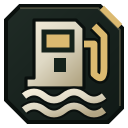
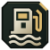

Marine gas stations
Marine gas stations on Hajin.

Marine Gas StationNear 14th Political Prison · Boat refuelling and repairs. · Official map markerC2- Marine Gas StationNear Cheongun Village · Boat refuelling and repairs. · Official map markerF4
- Marine Gas StationNear Hajin River Heights · Boat refuelling and repairs. · Official map markerG8
- Marine Gas StationNear Hajin River Heights · Boat refuelling and repairs. · Official map markerG9
- Marine Gas StationNear Haneul Nuclear Reactor · Boat refuelling and repairs. · Official map markerI4
- Marine Gas StationNear Songdo Wharf · Boat refuelling and repairs. · Official map markerI7
See it on the map in DMZ Tactical